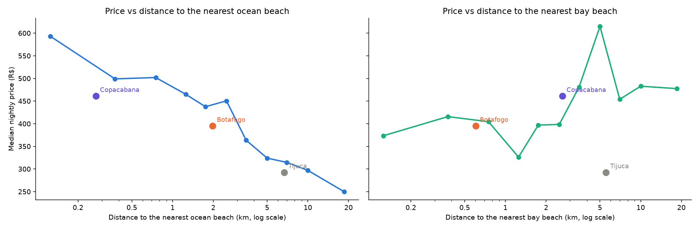
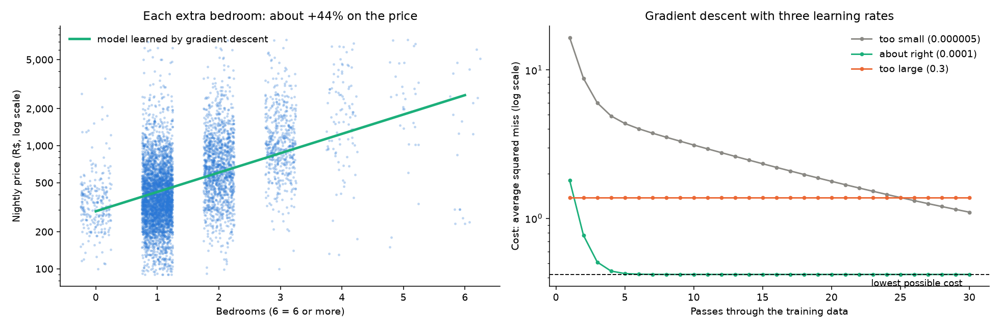
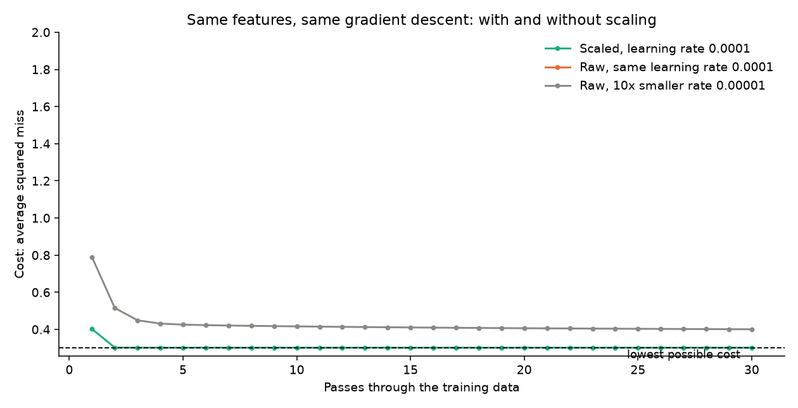
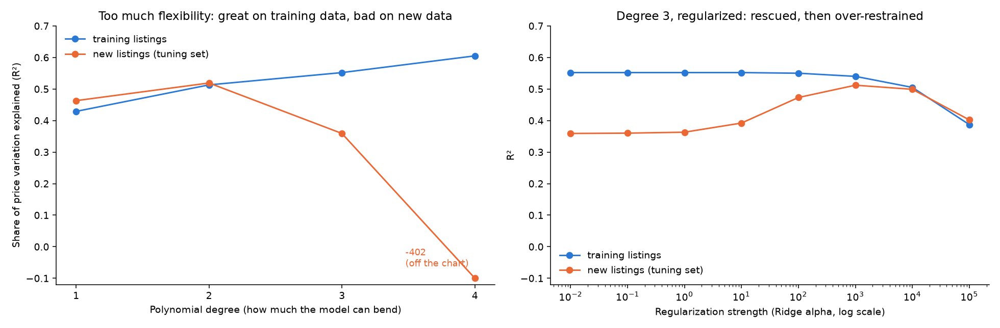
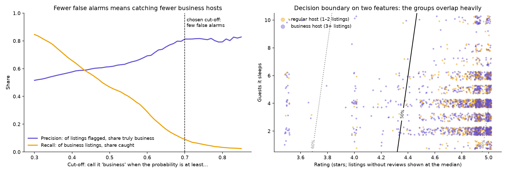

Airbnb prices in Rio
The problem: what makes an Airbnb in Rio de Janeiro expensive? And can you tell hosts who run it as a business from people renting out their own place?
What I built: two models from course 1 of the Machine Learning Specialization, applied to 43,192 real listings. One predicts the nightly price; the other estimates the chance that a host runs 3 or more listings. I built them step by step, making a decision at each stage.
The result: the price model explains 54% of what makes prices differ, well ahead of simple lookups (36%). Being near the ocean matters most. Business hosts turned out to be hard to spot from the listing alone, an honest finding in itself.
The ocean sets the price, not the bay
The typical nightly price by distance to the nearest ocean beach (left) and the nearest bay beach (right). Dots mark three neighbourhoods.
Prices fall steadily the further you are from an ocean beach. Distance to a bay beach, like Botafogo's or Flamengo's, shows no pattern. So why is Botafogo pricier than Tijuca? Because it's about 2 km from Copacabana, and it sits right on the ocean curve.

Learning, one step at a time
Left: the model learned from bedrooms alone. Right: how fast it learned with three different step sizes.
The model learns by taking small steps that reduce its error. The step size (the "learning rate") matters. Too small and it crawls; too large and it overshoots and bounces. Just right, it finds the best answer in a few passes: a base price of about R$290 a night for a studio, and about +44% for each extra bedroom.

Why the inputs need the same scale
The same learning method on all the features, with and without putting them on the same scale first.
Bedrooms run from 0 to 10, but the number of reviews goes up to 800. Without rescaling, a step size that suits one input is far too big for another, so the model bounces away from the answer (orange). A smaller step is stable but slow (grey). Rescaled, it gets there in two passes (green).

When a model learns too much
Left: letting the model bend more. Right: reining it back in.
A more flexible model always fits the listings it learned from better (blue). On new listings (orange), a little flexibility helps, but too much makes it memorise quirks, and it falls apart. A penalty on complexity ("regularization") brings it back. Too strong a penalty makes it too simple again, so the right amount is chosen on listings set aside for that purpose.

Business host or not?
Left: choosing how sure the model must be before calling a listing a business. Right: the two groups on two features.
The model gives each listing a probability of belonging to a business host. I decided a false alarm, calling someone who rents their own flat a business, is the worse mistake, so the cut-off is set high. That makes flags more often right, but catches far fewer businesses. On the right, the two groups overlap almost completely: from the listing alone, they look alike.

What I learned
- Start with simple guesses. A lookup by size beat a lookup by neighbourhood, and every model has to beat both.
- An effect depends on what else is in the model. An extra bedroom adds 44% on its own, but about 16% once guests and bathrooms are included, because they overlap.
- More flexible isn't more accurate. Check on data the model hasn't seen, and use regularization to hold it back.
- A classifier gives you a trade-off, not an answer. Picking the cut-off means picking which mistake costs more.
For the technical reader
- Targets: log nightly price (regression); host has 3+ listings (classification). Host listing counts are never features.
- Features: distances to the nearest ocean beach, bay beach and metro station (OpenStreetMap), neighbourhood, sea view, beachfront, room type, size, rating, reviews, years listed, and booking behaviour for the classifier.
- Split: 70/15/15, grouped by host so no host is on both sides; the test set is used once.
- Models (scikit-learn):
SGDRegressorfor gradient descent and learning rates,StandardScaler,PolynomialFeatures(degrees 1–4),Ridgewith its strength chosen on validation, andLogisticRegressionwith a 0.7 cut-off. - Test set: price R² 0.54, typical miss 45% (lookup baseline R² 0.36). Business host AUC 0.64; at 0.7, precision 67% and recall 5%.